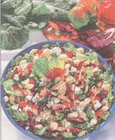
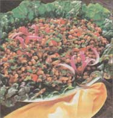

MOTHER'S KITCHEN
Making A Meal of
Not Just for Salads anymore.
Summer just wouldn't be the same without those backyard greens. I know because last summer I almost did without them. In the spring, my husband (our house gardener) was too busy to plant much more than a few tomato plants. Not wanting to deviate from our "you plant 'em, I'll cook 'em" agreement and pleading an old back injury, I refused to plant the greens. I never did enjoy planting, probably because even as a child I was never crazy about playing in the mud. Well, the Fourth of July rolled around and I was till begging (my husband says nagging) him to get out there at and plant. This losing strategy may have continued all summer (possibly resulting in divorce) if he hadn't stopped by an organic grocery to pickup some baby salad greens for me. After emptying out his wallet, he decided that a few seed packets were a better investment. So on a steamy hot mid-July day, a few rows of salad greens, arugula, mustard green, and kale were planted and we ate well from August till Halloween because I covered them on cool nights with an old shower curtain.
Besides the fresh flavor, convenience, and economic advantage, we benefit nutritionally from our backyard greens. As a general rule, the darker the green, the more nutritious it is. (This leaves tasteless iceberg lettuce at the bottom of the list.) The darker leaves also tend to be more flavorful, which is why our pet rabbit always nibbled on the kale and spinach. The darker greens are high in beta-carotene (vitamin A), vitamin C, calcium, iron, and of course, fiber, with kale and arugula in the lead. Among these nutrients are antioxidants, which have been shown to discourage cell damage and may help ward off cancer.
Types of Greens
Common salad varieties : Iceberg, romaine, green and red leaf, Boston, oak leaf, and endive (chicory) can be found in most supermarkets, but you can grow other interesting varieties. Select smaller leaves because the larger ones can sometimes be tough and bitter. Look for rust on the stems, especially when picking out romaine lettuce.
Mesclun salad greens (not to be confused with the mind-altering drug): This is a Provencal term referring to a mixture of spring or wild greens. This mixture varies but can include arugula, radicchio (an Italian chicory belonging to the cruciferous family), endives such as frisee, sorrel, baby spinach, and lettuces such as baby romaine and red oak leaf. Since mesclun tends to be expensive, I recommend either growing it (there are mesclun seed packets) or buying small amounts to mix in with other lettuces. When you're buying mesclun, check for yellowed or soggy leaves, which indicates it's too old. Since mesclun can get slimy when stored in a plastic bag, keep it in a plastic container and use within three to four days.
Cooking Greens: Greens such as beet tops, turnip greens, collards, dandelion, kale, Swiss chard, and mustard greens are referred to as cooking greens but some can be just as delicious (and more nutritious) eaten raw in salads. In Asian countries where vegetarian diets are common, greens can supply people with all the calcium they need. Instead of boiling the vitamins away, sauté or lightly steam the greens just until limp. One pound of greens will shrink down to about one cup when they're cooked. Cooking greens are sturdy greens to plant in your garden because they grow like weeds and can survive the cool fall weather. Make sure you select smaller leaves because they're the most tender.
Basic Vinaigrette
This dressing is very vinegary because I cut back on the oil. You could add less vinegar and more lemon juice if you prefer.
2 - 4 large cloves of garlic, minced 1/4 cup each: lemon juice, olive oil, balsamic vinegar 2 teaspoons dijon mustard 1 teaspoon sugar salt, freshly ground pepper, cayenne pepper to taste optional: fresh garden herbs - basil, oregano, thyme, dill (Chop or snip just before using.)
In a mixing bowl, whisk together all the ingredients. The dressing can be stored in a jar in the refrigerator for a few days but let it sit at room temperature a half hour before using. Makes 3/4 cup.
SALAD SUGGESTIONS
Preparing salad greens: Rinse well with cold water in a colander or a salad spinner (the latter is a good investment for salad lovers). Muddy salad greens may need to soak for a few minutes in a sink full of cold water, or fill the salad spinner with water. Shake the colander or use the spinner to get rid of excess water. This is important because salad dressing doesn't stick to wet leaves and will instead sink to the bottom of the salad bowl. Lay the greens on a non-terry cloth dishtowel and roll it up. Place the towel in a plastic bag and refrigerate the greens until needed, preferably the same day. Tear the larger lettuce leaves when you're preparing the salad.
Salad dressings: Bottled dressings are expensive and taste, well, like they're bottled. Flavorful garden greens need only a simple vinaigrette to enhance their flavors. A thicker, strong-tasting dressing such as creamy garlic is more suitable for a winter romaine lettuce.
Balsamic vinegar: A full-bodied vinegar with a great taste, balsamic is made in Italy from red grapes and processed almost like wine except that a vinegar culture is added. The longer the vinegar is aged in oak barrels, the more the liquid evaporates, resulting in a concentrated, sweeter flavor. Reasonably priced bal samics are aged for five to 10 years; the more expensive ones for up to 50 years. My favorite affordable balsamic is Monari Federzoni Balsamic Vinegar of Modena.
Blue Cheese Dressing
Without regressing to a glob of "thousand island" on a chunk of iceberg, we can still satisfy our occasional creamy dressing craving. Use only on sturdy greens such as romaine lettuce, spinach, and kale.
Place in a blender:
1/2 cup low-fat cottage cheese 1/2 cup nonfat or low-fat plain yogurt 1/2 cup crumbled blue cheese (I use a Wisconsin orAmish Gorgonzola.) 2 tablespoons white wine vinegar 2 tablespoons water 2 green onions, green tops removed dash cayenne pepper freshly ground pepper salt if needed
Puree until smooth. If the dressing is too thick, add more water a few drops at a time. Chill in a jar until ready to use. This dressing will keep up to a week.
Mediterranean Salad
Here's a simple salad to use with the vinaigrette.
6 cups mixed salad greens, using some romaine lettuce for crunch 1 small red onion, halved and thinly sliced 1/4 pound feta cheese (I use sheep or goat feta), cut into 1/2 inch cubes 1 garden red pepper, thinly sliced 1 small cucumber, thinly sliced into circles 1 cup cherry tomatoes 1/2 cup Greek olives for garnish Optional: homemade croutons
Prepare the lettuce (see sidebar). Place the lettuce in a large bowl, tearing the larger pieces. Toss with the vegetables, olives, and dressing, adding the dressing gradually. Serve topped with croutons.
Homemade Croutons
4 slices whole-grain bread (It's better to slice your own an inch thick.) 1 tablespoon butter or olive oil Seasoning suggestions: dried oregano, cayenne pepper, Italian seasoning, Cajun seasoning "Veg Sal," or "Spike"
Lay out the bread so it will get dry. (You can also put it in the toaster oven at 250°F ) When the slices are dry on both sides (but not hard), cut them into one-inch cubes. Heat a large skillet on medium-high heat and add the oil. When hot, add the croutons. Let them sit about 30 seconds, then flip over. Add the seasoning and stir. When crisp, remove from pan.
Garbage Salad
For a cool summer meal on a hot night, clean out the refrigerator or the garden and use whatever you have on hand, such as last night's leftover pasta or last winter's venison salami. Here's an idea of what it could be, using either the vinaigrette or blue cheese dressing. (I prefer the blue.) Omit the crumbled cheese if you're using blue cheese dressing.
3 cups cooked small pasta such as tiny seashells or tubetti, chilled (1 1/2 cups uncooked) about 12 ounces sautéed or grilled chicken breast, chilled and chopped into bite-sized pieces 6 cups crisp garden lettuce, such as romaine and spinach 6 green onions, chopped 1 red pepper, diced 1 green or yellow pepper, sliced (or use any garden not-too-hot pepper) 2 cups red cabbage, chopped optional: 1/3 - 1/2 pound crumbled Gorgonzola (blue cheese) or sharp smoked Swiss or cheddar
At least a few hours in advance, prepare the pasta and chicken. Chill until ready to use. Wash and dry the lettuce and spinach leaves. Slice it into half-inch strips and place in a large bowl. Slice the cabbage into thin slices, then chop. Add to the bowl with the vegetables and toss with the dressing. Arrange on a platter and top with the cheese. Serves 4.
Spicy Greens and Tofu (Vegan)
Here's a fast vegetarian dish that can be served with rice or by itself. I used turnip greens but other tender greens such as mustard greens will do.
5-6 cups turnip greens 1-pound package firm or extra firm (not silken) tofu, drained 1 semihot pepper, seeded and thinly sliced 1 tablespoon canola oil 4 large cloves garlic, minced
Sauce:
1/2 teaspoon chili oil (Only use a few drops if you don't like spicy food.) 2 tablespoons tamari (soy sauce) 1 tablespoon seasoned rice vinegar (not regular rice vinegar) 2 teaspoons sugar freshly ground pepper
Wash, dry, and chop the greens crosswise into half-inch strips and set aside with the pepper slices. Slice the tofu into 1/4- to 1/2-inch squares. Lay them on paper towels to soak up the water. Pat dry and place them on a platter. In a small bowl, whisk together the sauce ingredients. Heat a large nonstick skillet on medium-high heat, then add the oil. When the oil is hot, lay the tofu slices in a single layer. Let them sizzle on one side for about three minutes until browned. Flip over and brown on the other side. They should be crispy. Add the garlic, then the sauce, letting it cook for a minute until thickened. Remove the pan from the heat and place the tofu slices domino-style on the platter. Return pan to heat and sauté the peppers until soft, then lay them across the tofu slices. In the remaining sauce, sauté the greens just until wilted, adding a tablespoon of water if they get too dry. Remove and arrange around the tofu and serve. Serves 2 or 3.
Black-Eyed Peas 'n' Greens Salad
I prefer to use canned beans on a summer day, but homemade beans are fine.
15-ounce can black-eyed peas (2 cups), rinsed and drained 1/2 cup chopped red onions 1 small red pepper, raw or roasted, diced 6 cups chopped greens such as red or green Swiss chard optional: diced garden tomato for garnish
Dressing:
2 tablespoons extra-virgin olive oil 1 tablespoon balsamic vinegar 1 teaspoon each: sugar, dried oregano, grainy mustard 1 large clove garlic, minced 1/2 teaspoon salt freshly ground pepper
In a large bowl, whisk together all the dressing ingredients. Add all the salad ingredients except the greens. Wash, drain, and thinly slice the greens. Wilt the greens in a large skillet on medium-high heat, stirring constantly, for about a minute. They should still be slightly crisp. Add to the salad and toss. Serve at room temperature topped with the chopped tomatoes. This salad is best eaten the same day.
|
|
 |
 |